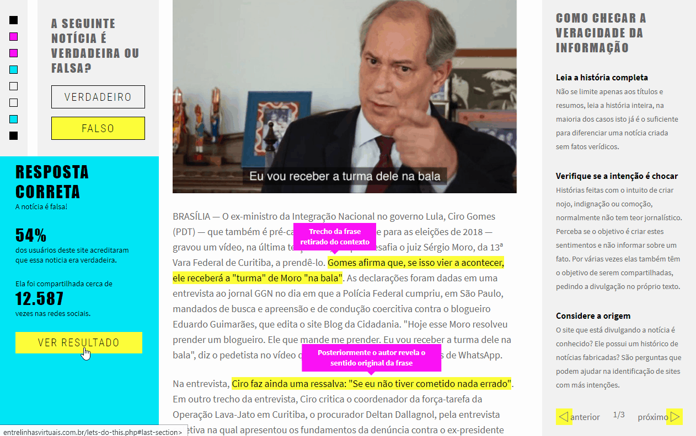
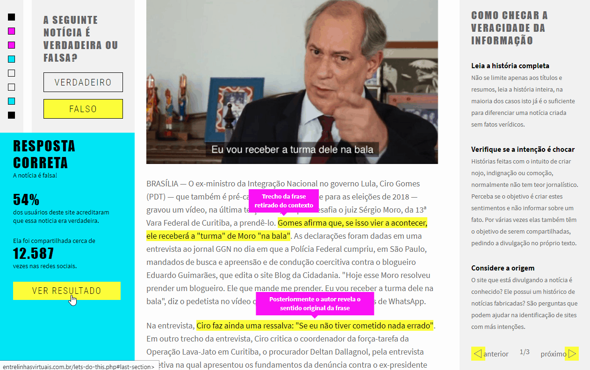

Entrelinhas
Escopo
- UI / UX Design
- Interaction Design
- Gamification
Cliente
Projeto Pessoal
Setor
Informação
Desafio
Conscientizar as pessoas a respeito da abundância de notícias falsas e da gravidade da disseminação dessas desinformações na internet.
Pesquisa
Através de questionários e pesquisas consolidadas, analisamos como as pessoas compartilhavam fake news nas redes sociais.
Insights
- Notícias falsas ocupam apenas 0,1% do total de informações da mídia, mas são compartilhadas duas vezes mais do que notícias verdadeiras.
- Um dos principais motivos para o compartilhamento de notícias falsas provém da ausência de conhecimento sobre verificação dos fatos.
- Os tipos de usuários vão desde pessoas que não possuem consciência sobre o problema até experts que querem validar seus conhecimentos.
Jornada
Inicialmente o usuário é questionado sobre seu conhecimento de notícias falsas. Através de uma experiência gamificada, a pessoa aprende o assunto em um jogo de reconhecimento de notícias verdadeiras e falsas veiculadas na mídia.
Solução
Entrelinhas Virtuais, uma experiência gamificada que auxilia pessoas a reconhecerem notícias falsas e verdadeiras através do pensamento crítico.

 
